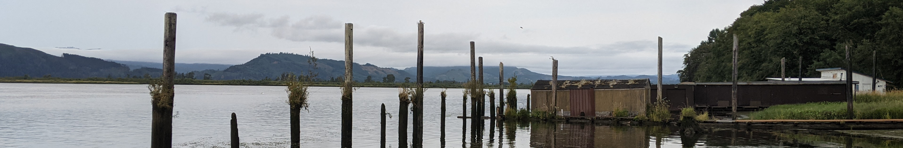

Google Summer of Code 2023 project page

libcamera is an open source camera stack that makes camera integration easy for Linux and other platforms.
One of the camera types supported by libcamera is UVC (USB video class) devices. Most of the commonly used devices that fall under this category are webcams, which may be standalone (such as a logitech webcam) or integrated into a laptop as the built-in camera. When libcamera provides the user with image data from the device, it also provides a timestamp. This timestamp is taken by the computer (host) when the device driver handles a frame received from the camera. However, UVC devices may provide metadata with information on when raw frame capture began. The goal of this project is to use the UVC metadata to calculate this more accurate timestamp and report that to the user.